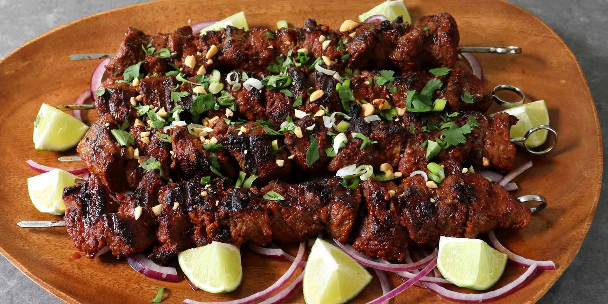

Suya!

Suya is a spicy meat skewer, a popular West African
street food, particularly in Nigeria. It typically
consists of thinly sliced meat, often beef, that
is marinated in a blend of spices, skewered, and
grilled over an open flame.
Ingredients
- Yaji
- Salt
- Onion Powder
- Garlic Powder
- Stock Cubes
Steps
- Finely grind roasted peanuts
- Combine spices like ground ginger, onion p, etc
- Whisk thoroughly
- Thinly slice beef, marinate for 30 min, refridgerate
- Grill!
Back to Main Page